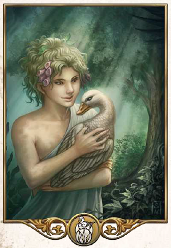

"Nur wo GAstfreundschaft und True herrschen, da können die Menschen in Frieden und Harmonie und ohne Angst miteinander leben."
Aspekte: Treue, Gastfreundschaft, Heimat, Mildtätigkeit
Symbole/Wahrzeichen: Herdfeuer
Heiliges Tier: Wildgans
Travia ist die mütterliche Herrin von Familie, Herdfeuer und Gastfreundschaft. Niemand will heimatlos oder ohne Familie sein und so genieß die göttliche Mutter aventurienweit hohes Ansehen. Viele Schwüre werden in ihrem Namen abgelegt, vom Treueeid bis hin zum ehelichen Traviabund zwischen Mann und Frau. Treue ist Travia gerade in einer Ehe besonders wichtig, was manchmal unweigerlich zu Konflikten mit den Idealen der lebenslustigen Rahja führt. Nicht nur Gastwirte bringen Travia Verehrung entgegen, sondern jeder, der Familienglück und familiären Zusammenhalt schätzt. Die Götter gilt nicht nur als Patronin der Kochkunst, auch Mildtätigkeit spielte eine große Rolle im gemeinsamen Miteinander, weshalb viele Armenspeisungen und Weisenhäuser von der Traviakirche unterhalten werden. Das heilige Tier der Kirche ist die Wildgans und oft kann man die Gänsefamilien in den Tempeln dabei beobachten, wie sie hinter den Priestern in den orangfarbenen Roben heranwatscheln. Die Führung der kirche hat stets ein Ehepaar inne, das als Heiliges Paar in Rommilys residiert.